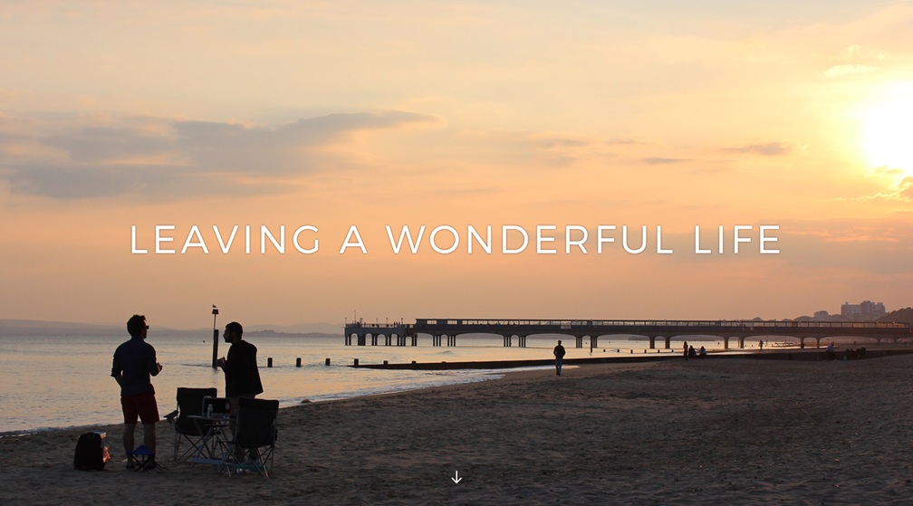

APACHE BLACK
TRAVEL BLOG
See it live >
See the code behind it >
As someone who enjoys writing and photography, I felt a blog would be the perfect way to record and share my travel experiences in a way that would allow me to indulge in my aforementioned hobbies.
I purposefully designed the blog to be incredibly simple, making sure nothing distracted the user from the content. This included design decisions that would normally be considered bad practice, such as forgoing a nav bar, and refraining from giving textual headers to the latest post and featured posts on the home page.
I believe the layout of the site conveys to the user how important each post is without the need for explicit headers, and the limited possible journeys through the site defeat the purpose of a navigation bar. With less of the website to ‘figure out’, this should free up the user’s mental resources to focus on exactly what they visited it for: the content.

The site is essentially a custom WordPress theme created from scratch. Using a fit for purpose blogging platform reduced the amount of technical work required, allowing me to focus on what I wanted to achieve with the design and how I wanted users to interact with the website.